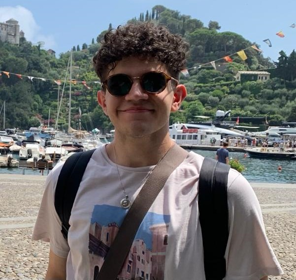

Parsa Jafaripour

64-58 233rd St . Oakland Gardens, NY 11364 . 5164390989
parsajafaripour@gmail.com
SUMMARY OF QUALIFICATIONS
- Analytical thinker with a strong problem-solving aptitude, leveraging a wide range of tools and methodologies
- Strong leadership skills; able to coordinate groups and teams to stay motivated and organized, while providing solutions to any difficulties
- Self-directed, energetic, self-motivated and a quick learner with a strong emphasis on detail and organization; punctual
- Ability to handle pressure, prioritize workloads while maintaining high quality of work
- Excellent verbal and written communication abilities
- Fluent in three languages: English, German, Persian
TECHNICAL SKILLS
Software: Microsoft Word, PowerPoint, Excel
Programming Languages: Java, Python, HTML, CSS
EDUCATION
Expected Fall 2025
B.S. Degree in Computer Science | Farmingdale State College, Farmingdale, NY
GPA: 3.93/4.0, President’s List | Relevant Coursework: TeamWorks (Java, Python), HackerRank Course
Additional training: Completed “The Complete Web Development Bootcamp” with Dr.Angela Yu
Oct 2021 – Mar 2022
12 credits earned toward B.S. Degree in Physical Engineering
FH-Aachen University, Aachen, Germany
Relevant Coursework: Mathematics, Physics, German
Oct 2020 - Jun 2021
40 credits earned toward B.S. Degree in Industrial Engineering
Azad University Research and Science Branch, Tehran
GPA: 3.2/4.0
ADDITIONAL EDUCATION AND TRAINING
Mar 2021 - Jun 2021
German B2 Certificate | Goethe Institute, Athens, Greece
EXPERIENCE
Feb 2023 – Present
Office Assistant | Student Activities, Farmingdale State College, Farmingdale, NY
- Enter and analyze detailed student activity data using Excel, ensuring accurate records for informed decision-making
- Provide prompt and professional responses to student inquiries in person and via email, offering on-campus engagement opportunities
- Collaborate with office staff to coordinate and conduct effective staff meetings, fostering a productive and organized work environment
Sep 2020 - Jun 2021
Intern | Pishbar Global Logistics, Tehran, Iran
- Utilized strong analytical and problem-solving skills to assist in data management and ensure accurate export and import records
- Effectively communicated with internal and external stakeholders, addressing inquiries and providing timely information
- Demonstrated proficiency in IT skills by troubleshooting and resolving technical issues related to company systems and software
- Coordinated and scheduled shipments, ensuring timely delivery of goods to destinations worldwide
- Assisted in the preparation of documentation and paperwork required for customs clearance and compliance with international trade regulations; provided administrative support to logistics team
- Consistently met or exceeded performance expectations, as demonstrated by positive feedback from supervisors and colleagues
CLUBS AND ACTIVITIES
Jan 2023 - Present
Rambots Club | Farmingdale State College, New York
- Participate actively in the FSC Rambots club, which emphasizes teamwork, creativity, and leadership via practical projects in mechanics, electronics, programming, and design
- Apply computer science knowledge to collaborate effectively with team members, demonstrating strong technical and interpersonal skills
- Gain technical and interpersonal skills by actively participating in group activities and working with other members
Dec 2022 - Present
Member of the ACM Computer Technology Club | Farmingdale State College, New York
- Engage in club activities, including Tech Talks, presentations, and seminars, to foster learning, collaboration, and skill development
- Exhibit coding skills and assume leadership responsibilities, present to club members and set up workshops
Mar 2022 - Aug 2022
Boxer and Regional Champion| Pow Box, Athens, Greece
- Organized and supervised small groups of new boxers in boxing camps, exhibiting strong leadership and mentoring skills
- Fought 6 professional/regional fights in Athens
- Trained extensively for several months to prepare for fights
Sep 2019 – Jun 2020
Tennis Team | Allameh Tabatabaei High School, Tehran, Iran
Dec 2019 - Mar 2020
Ski Team | Allameh Tabatabaei High School, Tehran, Iran
- Trained and participated in individual and team competitions
- Aided new team members, acted as a mentor, and helped with equipment and logistics management
- Exhibited excellent leadership, sportsmanship, and teamwork on ski slopes
VOLUNTEER EXPERIENCE
Sep 2020 – Jun 2021
Volunteer | Nature Cleaners of Iran (Roftegarane Tabiat), Tehran, Iran
- Volunteered for "Nature Cleaners of Iran," a reputable environmental organization in the nation
- Engaged in hands-on cleanup efforts and assisted with the organization and promotion of events
- Partnered with a committed group of volunteers to accomplish shared environmental aims
- Made a significant impact on neighborhood by gathering recyclable waste in parks outside of Tehran
- Contributed to organization's expansion and success, now operating in 31 provinces across Iran
- Contributed to a noble cause and improve Iran's environment